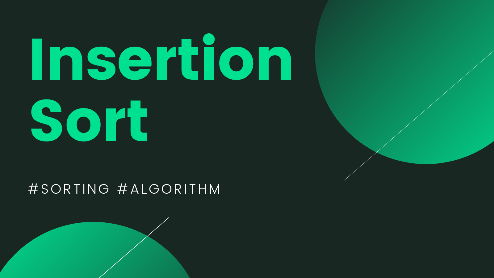

Sorting Algorithm




Merge Sort
Merge sort is a sorting algorithm that uses the "divide and conquer" strategy to sort a list of elements by repeatedly dividing the list into smaller sublists until each sublist contains only one element, then merging those sublists back together in a sorted manner, resulting in a completely sorted list.